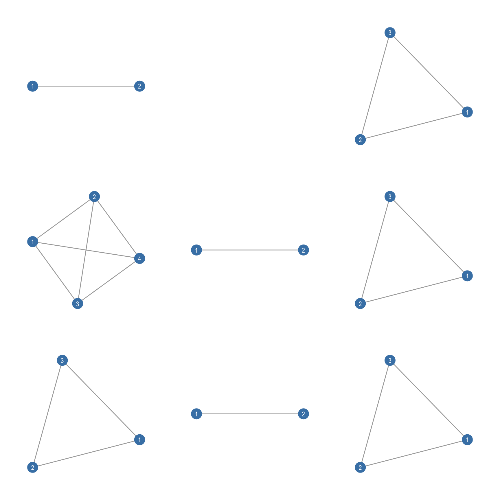

library(igraph)
library(egor)
library(ggraph)
library(patchwork)
library(tidyverse)8 Ego Networks
Ego networks refer to the personal network surrounding a single focal individual, known as the ego. An ego network includes the ego, the people directly connected to them, so called alters, and the relationships among those alters. Rather than examining an entire community or organization, ego network analysis focuses on the immediate social environment of one person, allowing researchers to understand how information, resources, influence, or support flow through that individual’s connections. By analyzing the size of the network, the strength of ties, the diversity of contacts, and the level of interconnectedness among alters, scholars can assess factors such as social capital, access to opportunities, and resilience. Ego networks are especially useful in studying phenomena like job searching, knowledge sharing, health behaviors, and online social interaction, where an individual’s direct relationships play a critical role in shaping outcomes.
In this chapter, we will begin by introducing the fundamentals of ego network data and learning how to use the egor package to manipulate, construct, and visualize ego networks. We will then examine substantive research questions related to homophily; the tendency for similar individuals to associate with one another more frequently than with dissimilar others, across various demographic dimensions. Finally, we will explore an applied example in which properties of ego networks are used to predict important outcomes of interest.
8.1 Packages Needed for this Chapter
NoteNote
The egor package works with ego network data in tidy format, meaning it follows tidy data principles. In tidy data, each row represents one observation and each column represents one variable. Instead of storing everything in a single large matrix, ego network data are separated into three linked tables: one containing information about egos, one containing information about alters, and one containing the ties among alters. These tables are connected through ID variables that indicate which alters belong to which ego and which alters are tied to one another. This structure makes the data easier to understand, manipulate, and analyze using tools from the tidyverse, while still preserving the relational nature of network data.
8.2 Ego Network Data Structure
Ego network data are typically generated through survey-based approaches that capture information about individuals and their immediate social surroundings. In one common design, respondents (egos) are asked to name the people with whom they have specific types of relationships and to describe the connections among those named individuals (alters), thereby providing both node-level and tie-level information from a single informant. A more elaborate strategy uses a two-stage snowball approach: after the initial respondent identifies their contacts, those contacts are subsequently surveyed about their relationships with one another, allowing for more detailed mapping of ties within the ego’s local network. Although data collected in these ways do not reveal how these personal networks are embedded within the broader population structure, they enable researchers to estimate the distribution and characteristics of ego network forms across even very large populations. Methodologically, such data consist of multiple distinct networks—each centered on a different ego and typically composed of different actors—meaning that each ego network should be stored and analyzed as a separate actor-by-actor matrix rather than combined into a single stacked dataset, since the matrices do not represent multiple relations among the same set of individuals.
A second common source of ego network data involves deriving them from complete network datasets that already contain information about all actors and ties within a bounded population. In this case, researchers can extract the local network surrounding a focal actor directly from the larger structure. Simple extraction procedures allow analysts to isolate an ego and their direct ties, though these methods may omit information about relationships among the alters themselves. More comprehensive approaches rely on identifying a defined neighborhood, such as through a previously constructed attribute or partition that marks members of a particular ego’s local environment, and then generating a subgraph that preserves both ego–alter and alter–alter ties. Unlike survey-generated ego networks, these extracted ego networks remain embedded within a known global structure, enabling comparisons between local and whole-network properties.
8.2.1 Constructing an Ego Network with egor
An egor object contains all data levels associated with ego-centered network analysis, those levels are: ego, alter, alter-alter ties. We will work with the built-in example datasets provided by the egor package: data("egos32"), data("alters32"), and data("aaties32"). These internal data frames contain information at the three core levels of ego-centered network analysis—ego attributes, alter attributes, and alter–alter ties; allowing us to construct a complete egor object without needing to import external data. Using these datasets ensures that everyone is working with the same structured example while learning how the different data levels are linked together and prepared for analysis.
data("alters32")
data("egos32")
data("aaties32")
egos32# A tibble: 32 × 6
.EGOID sex age age.years country income
<dbl> <chr> <fct> <int> <chr> <dbl>
1 1 m 56 - 65 63 Australia 29930
2 2 m 26 - 35 33 Germany 17885
3 3 m 66 - 100 74 Germany 20805
4 4 w 18 - 25 21 Poland 29565
5 5 m 0 - 17 9 Germany 15330
6 6 m 0 - 17 6 Australia 23360
7 7 m 66 - 100 84 Australia 19345
8 8 w 66 - 100 100 Poland 35040
9 9 m 36 - 45 38 USA 64605
10 10 m 0 - 17 14 Australia 49275
# ℹ 22 more rowsalters32# A tibble: 384 × 7
.ALTID .EGOID sex age age.years country income
<int> <dbl> <chr> <fct> <int> <chr> <dbl>
1 1 1 m 46 - 55 48 USA 45625
2 2 1 m 0 - 17 5 Germany 52925
3 3 1 w 26 - 35 35 Australia 60225
4 4 1 w 0 - 17 3 Poland 25550
5 5 1 m 66 - 100 97 Australia 45260
6 6 1 w 26 - 35 29 Germany 8395
7 7 1 m 26 - 35 32 USA 54020
8 8 1 w 46 - 55 49 USA 60955
9 9 1 m 56 - 65 60 Germany 39055
10 10 1 w 46 - 55 52 Australia 7300
# ℹ 374 more rowsaaties32# A tibble: 1,056 × 4
.EGOID .SRCID .TGTID weight
<int> <int> <int> <dbl>
1 20 1 2 0.667
2 25 6 10 0.667
3 9 6 8 0.667
4 31 2 10 0.667
5 24 1 12 0.333
6 11 9 11 0.333
7 7 3 6 0.667
8 8 6 7 0.667
9 32 3 7 0.667
10 26 2 10 1
# ℹ 1,046 more rowsAs seen, each of the three data frames is linked through unique identifier variables that ensure the different levels of information correspond to the correct individuals. The egoID variable appears in all three datasets and serves as the key that ties each ego’s attributes to their respective alters and the ties among those alters. Within the alter-level dataset, each contact is assigned an alterID, which is then referenced again in the alter–alter tie dataset through the Source and Target columns to indicate which specific alters are connected. With these identifiers in place to preserve the relational structure across data levels, we can now combine the datasets into a single egor object:
ego32 <- egor(
egos = egos32,
alters = alters32,
aaties = aaties32,
ID.vars = list(
ego = ".EGOID",
alter = ".ALTID",
source = ".SRCID",
target = ".TGTID"
)
)
ego32# EGO data (active): 32 × 6
.egoID sex age age.years country income
* <dbl> <chr> <fct> <int> <chr> <dbl>
1 1 m 56 - 65 63 Australia 29930
2 2 m 26 - 35 33 Germany 17885
3 3 m 66 - 100 74 Germany 20805
4 4 w 18 - 25 21 Poland 29565
5 5 m 0 - 17 9 Germany 15330
# ℹ 27 more rows
# ALTER data: 384 × 7
.altID .egoID sex age age.years country income
* <int> <dbl> <chr> <fct> <int> <chr> <dbl>
1 1 1 m 46 - 55 48 USA 45625
2 2 1 m 0 - 17 5 Germany 52925
3 3 1 w 26 - 35 35 Australia 60225
# ℹ 381 more rows
# AATIE data: 1,056 × 4
.egoID .srcID .tgtID weight
* <int> <int> <int> <dbl>
1 20 1 2 0.667
2 25 6 10 0.667
3 9 6 8 0.667
# ℹ 1,053 more rowsWhen we print ego32, the output confirms that we successfully combined the three data levels—egos, alters, and alter–alter ties—into a single egor object. The first block, “EGO data (active): 32 × 6”, indicates that the object contains data on 32 egos (one per row) and six ego-level variables (e.g., sex, age group, age in years, country, and income). The asterisk next to the header marks this as the currently active data level being displayed. The second block, “ALTER data: 384 × 7”, shows that the egos collectively named 384 alters in total, each linked back to a specific ego via the .egoID column, and described by their own attributes; .altID uniquely identifies alters within ego networks. Finally, the “AATIE data: 1,056 × 4” section lists the alter–alter ties: each row is a connection between two alters within the same ego network, where .egoID specifies the ego network and .srcID/.tgtID identify the two alters involved; the weight column records the value or strength of the tie.
8.3 Plotting Ego Nets
We now plot the networks using igraph. The first step is to convert the egor object into a list of igraph objects using as_igraph(). Below, we create the list and inspect the first three ego networks.
# Convert egor object to a list of igraph ego networks
ego_nets32 <- as_igraph(ego32)
# Inspect the first three ego networks
ego_nets32[1:3]$`1`
IGRAPH e58a366 UNW- 12 32 --
+ attr: .egoID (g/n), name (v/c), sex (v/c), age (v/c), age.years
| (v/n), country (v/c), income (v/n), weight (e/n)
+ edges from e58a366 (vertex names):
[1] 3 --6 5 --7 4 --7 4 --6 6 --9 5 --10 2 --8 2 --3 2 --4 3 --4
[11] 2 --5 1 --6 1 --2 4 --10 2 --10 7 --12 10--12 2 --12 6 --12 2 --9
[21] 5 --8 6 --10 8 --12 6 --11 1 --9 2 --11 5 --11 2 --6 5 --6 1 --7
[31] 4 --12 3 --10
$`2`
IGRAPH ec1c0d7 UNW- 12 33 --
+ attr: .egoID (g/n), name (v/c), sex (v/c), age (v/c), age.years
| (v/n), country (v/c), income (v/n), weight (e/n)
+ edges from ec1c0d7 (vertex names):
[1] 1 --7 8 --9 3 --11 6 --10 1 --5 6 --9 1 --11 3 --4 7 --8 6 --12
[11] 1 --4 5 --9 2 --11 4 --7 5 --12 2 --5 4 --5 3 --12 3 --6 3 --5
[21] 7 --11 8 --11 9 --10 11--12 6 --11 2 --9 2 --12 1 --12 1 --2 1 --9
[31] 1 --6 4 --9 4 --11
$`3`
IGRAPH 4514fb9 UNW- 12 33 --
+ attr: .egoID (g/n), name (v/c), sex (v/c), age (v/c), age.years
| (v/n), country (v/c), income (v/n), weight (e/n)
+ edges from 4514fb9 (vertex names):
[1] 5--12 9--10 5--9 2--10 4--10 4--12 6--7 3--6 7--8 3--4 4--11 2--4
[13] 4--6 9--12 2--9 8--10 3--7 1--6 2--7 5--7 1--2 3--12 4--7 1--8
[25] 6--9 6--10 1--3 2--6 3--10 7--12 7--10 6--8 1--12
Note
If we instead wanted to work within the statnet framework, we could use as_network() to convert the data into objects of class network.
After running as_igraph(), we obtain a list of ego networks in igraph format, where each element of the list corresponds to one ego’s personal network. The attributes stored at the alter level are automatically transferred as vertex attributes, and the alter–alter tie information (including edge weights) is preserved as edge attributes. By default, the ego node itself is not included in these igraph representations. This is common practice because ego is, by definition, connected to all alters, and therefore contributes little additional structural variation in many visualizations or structural measures. In later sections, we will examine statistics that explicitly incorporate both ego and alter information.
We now visualize a subset of the data by plotting the first 9 ego networks in the list using ggraph. This is shown in Figure 8.1.
# Create plots for first 9 ego networks
plots <- lapply(ego_nets32[1:9], function(g) {
ggraph(g, layout = "stress") +
geom_edge_link(alpha = 0.4) +
geom_node_point(size = 6, color = "steelblue") +
geom_node_text(aes(label = name), repel = FALSE, size = 3, color = "white") +
theme_graph()
})
# Arrange in 3 x 3 grid
wrap_plots(plots, ncol = 3)
8.4 Descriptive Statistics for Ego Networks
One of the most commonly used structural measures in ego network analysis is density. Density captures the proportion of all possible alter–alter ties that are actually present in an ego network. In other words, it tells us how interconnected an ego’s alters are with one another. For example, if an ego has 5 alters, there are \[ \frac{5 \times (5 - 1)}{2} = 10 \] possible undirected ties among those alters. If all 10 ties are present, density equals 1 (a fully connected clique). If only 8 of the 10 possible ties are present, density equals 0.8.
Density is often of substantive interest because it reflects the level of cohesion within a personal network. Highly dense ego networks (values close to 1) indicate tightly knit groups in which most alters are connected to one another. Such cohesive structures can facilitate trust, norm enforcement, and social support, as information circulates quickly and reputational mechanisms are strong. However, according to structural hole theory (Burt 1992), dense networks tend to generate redundant information because alters are connected to many of the same people and share overlapping perspectives. The key advantages of social capital derive not primarily from the attributes of one’s alters, but from the structure of the ego network itself. Individuals benefit when they bridge gaps, so-called structural holes, between otherwise disconnected groups. In low-density networks, ego may occupy a brokerage position linking clusters that are not directly connected to each other, thereby gaining access to diverse, non-redundant information and potential strategic advantages (such as faster promotion within organizations). Density therefore captures an important theoretical trade-off between cohesion and brokerage in ego network structure.
We can calculate density for each ego network using the ego_density() function applied to our ego32 object. Note that ego networks with 0 or 1 alters will have NA values for density, because density is undefined when no alter–alter ties are possible.
dens32 <- ego_density(ego32)
head(dens32)# A tibble: 6 × 2
.egoID density
<dbl> <dbl>
1 1 0.485
2 2 0.5
3 3 0.5
4 4 0.409
5 5 0.561
6 6 0.455